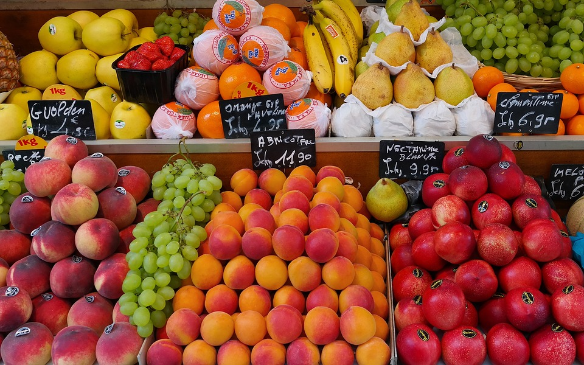

Dear {{ user.displayName }},
Dear {{ name }},

You are logged in successfully, as {{ user.displayName }},
so after shopping, you will be able to place order.
Please login to place your orders after shopping:
Click here to Login
Home DASHBOARD
TODO: ENABLE THE END OF BUTTONS